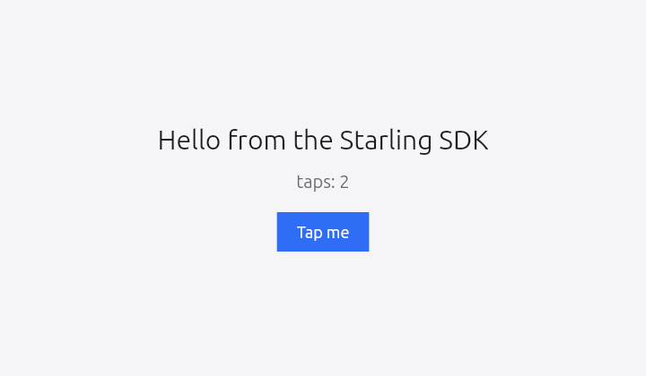

From nothing to a running app in about ten minutes
One download, four files, one swift build. You do not need an
engine checkout, depot_tools, ninja, or 40 GB of disk — the SDK bundle
carries the Flutter engine binaries with it. Every command below was run
start to finish on a clean machine before this page was written.
What you need
- Linux x86_64 with a graphical session (Wayland or X11). Ubuntu 26.04 is what we test on; anything with a recent glibc should work.
- Swift 6.2 or newer — from swift.org or swiftly. Tested on 6.2.4 and 6.3.3; on 6.3 you can drop two flags from the manifest below, so it is the one to pick if you have a choice.
- GTK 3 and a few system libraries, which the engine links
against:
sudo apt install libgtk-3-dev libegl-dev libgles-dev libdrm-dev \ libgbm-dev libxkbcommon-dev libepoxy-dev
1Install the SDK
The bundle is the framework plus the engine binaries it links against, in one
tree. Unpack it anywhere — /opt is a good default.
curl -LO https://github.com/starling-build/starling/releases/download/sdk-v0.1.0/starling-sdk-linux-x86_64.tar.gz sudo tar -xzf starling-sdk-linux-x86_64.tar.gz -C /opt/
That gives you:
/opt/starling-sdk-linux-x86_64/ Package.swift # the SDK, as a SwiftPM package Sources/ # the framework: widgets, rendering, gestures… Examples/ # counter, todos, calendar, the demo app engine/lib/ # libflutter_engine.so + the embedders engine/share/ # icudtl.dat, flutter_assets
Verify the download if you like — the release carries a
SHA256SUMS file next to the tarball:
curl -sL …/SHA256SUMS | sha256sum -c -
2Create the package
An ordinary SwiftPM executable that depends on the SDK by path. Three
products: Flutter is the framework, FlutterSwiftBridge
carries the dart:ui types (Color, Offset,
Rect), and FlutterGTK is the window host.
// swift-tools-version: 6.0 import PackageDescription let package = Package( name: "HelloStarling", dependencies: [ .package(path: "/opt/starling-sdk-linux-x86_64"), ], targets: [ .executableTarget( name: "HelloStarling", dependencies: [ .product(name: "Flutter", package: "starling-sdk-linux-x86_64"), .product(name: "FlutterSwiftBridge", package: "starling-sdk-linux-x86_64"), .product(name: "FlutterGTK", package: "starling-sdk-linux-x86_64"), ], swiftSettings: [ // Required: the framework is built with C++ interop, and // SwiftPM does not inherit it from a dependency. .interoperabilityMode(.Cxx), // Swift 6.2 on Ubuntu 26.04 only. DELETE these two lines on // Swift 6.3+ — see "If it does not build". .unsafeFlags(["-Xcc", "-D_GLIBCXX_MATH_H", "-Xcc", "-include", "-Xcc", "/usr/include/math.h"]), ] ), ] )
The package name is the directory name. A path dependency
takes its name from the folder, so it is
package: "starling-sdk-linux-x86_64" — not
"starling-sdk". Rename the folder and you rename the package.
3Write the app
If you have written Flutter, this will look familiar: a
StatefulWidget, a State that owns the counter, and
setState to change it. The only unfamiliar part is the last three
lines — GTKHost opens a window and mounts your widget in it.
import Flutter import FlutterGTK import FlutterSwiftBridge final class Counter: StatefulWidget { override func createState() -> State<StatefulWidget> { CounterState() } } final class CounterState: State<StatefulWidget> { private var taps = 0 override func build(_ context: any BuildContext) -> Widget { return ColoredBox(color: Color(0xFFF5F5F7)) { Center { Column(mainAxisAlignment: .center) { Text("Hello from the Starling SDK", style: TextStyle(color: Color(0xFF1B1B1F), fontSize: 30)) SizedBox(height: 18) Text("taps: \(taps)", style: TextStyle(color: Color(0xFF6B6B75), fontSize: 20)) SizedBox(height: 24) GestureDetector( onTap: { [weak self] in self?.setState { self?.taps += 1 } }, child: ColoredBox(color: Color(0xFF2F6DF6)) { Padding(padding: EdgeInsets(horizontal: 22, vertical: 12)) { Text("Tap me", style: TextStyle(color: Color(0xFFFFFFFF), fontSize: 18)) } } ) } } } } } guard let host = GTKHost(width: 720, height: 420, title: "Hello Starling") else { fatalError("no display — run inside a Wayland or X11 session") } host.mountWidget { Directionality(textDirection: .ltr, child: Counter()) } host.run()
Two Swift-isms if you are coming from Dart. Every container
takes a trailing closure, so Column { … } replaces
Column(children: [ … ]) and lets you write if and
for directly inside the tree. And Dart's named constructors
become plain initialisers: EdgeInsets.symmetric(horizontal:vertical:)
is EdgeInsets(horizontal:vertical:) here.
4Build and run
The first build compiles the framework and takes a few minutes; later builds of your own code take seconds.
swift build -c release
Before running, the engine needs its data — icudtl.dat and
flutter_assets — in a data/ folder beside the
executable. This is the standard Flutter bundle layout, and the one thing
that is easy to miss:
mkdir -p .build/release/data ln -sf /opt/starling-sdk-linux-x86_64/engine/share/icudtl.dat .build/release/data/ ln -sf /opt/starling-sdk-linux-x86_64/engine/share/flutter_assets .build/release/data/ ./.build/release/HelloStarling

Shipping it
To run on a machine without the SDK installed, put the engine libraries and the
data beside your binary and give it an rpath of $ORIGIN:
mkdir -p dist/data cp .build/release/HelloStarling dist/ cp /opt/starling-sdk-linux-x86_64/engine/lib/*.so dist/ cp -r /opt/starling-sdk-linux-x86_64/engine/share/* dist/data/
If it does not build — or does not run
cmath: redefinition of 'acos'
Swift 6.2 on Ubuntu 26.04. The 6.2 toolchain is built for
24.04, and 26.04 pairs glibc 2.43 with libstdc++ 15, which makes Foundation's
C shim pull <cmath> twice under C++ interop. The two
-Xcc flags in the manifest above are the workaround, and
they must be on your own target — SwiftPM does not propagate
compiler settings from a dependency, so the SDK setting them internally does
nothing for you.
Swift 6.3 does not need them. We measured both: 6.2.4 fails exactly as above without the flags and builds with them; 6.3.3 builds either way. If you are on 6.3 or newer, delete those two lines — they are only clutter there. (There is still no official Ubuntu 26.04 toolchain; 24.04 remains the newest swift.org build, and it works fine on 26.04.)
libflutter_linux_gtk.so: cannot open shared object file
The engine libraries are not being found. The bundle bakes an rpath into your
binary pointing at /opt/starling-sdk-linux-x86_64/engine/lib, so
this means the SDK moved after you built. Rebuild, or set
LD_LIBRARY_PATH to wherever the libraries now live.
The window opens but stays black
The engine could not find its data. Check that
.build/release/data/icudtl.dat resolves — a broken symlink looks
exactly like this. On a machine with no GPU acceleration (a VM, or a virtual
display), also try LIBGL_ALWAYS_SOFTWARE=1.
no display
GTKHost needs a graphical session. Over SSH, forward a display or
run inside one — the host is a GTK window, not a framebuffer client. On a
Wayland session where GTK picks the wrong backend,
GDK_BACKEND=x11 is a useful fallback.
Where to go from here
The bundle ships its own Examples/: the Flutter counter, a todo
app, a startup-name generator, and a calendar package port with day, week and
month views. They are targets of the SDK package, so you can run them in place:
cd /opt/starling-sdk-linux-x86_64 swift run -c release CounterApp
Because the framework is a port rather than a reimagining, Flutter's own documentation applies — widget catalogue, layout rules, the constraints-go-down-sizes-go-up model. When a Dart example uses a named constructor, look for the matching Swift initialiser; the rest translates directly.
That is the whole loop
Download, four files, build, run. If something here does not work on your machine, that is a bug in this page as much as in the code — please open an issue.